R = matrix(cbind(1, 0.8, -0.5, 0, 0.8, 1, -0.3, 0.3, -0.5, -0.3, 1, 0.6, 0, 0.3,
0.6, 1), nrow = 4)
R## [,1] [,2] [,3] [,4]
## [1,] 1.0 0.8 -0.5 0.0
## [2,] 0.8 1.0 -0.3 0.3
## [3,] -0.5 -0.3 1.0 0.6
## [4,] 0.0 0.3 0.6 1.0In this module, we extend our simple linear regression and ANOVA models to cases where we have more than one predictor variable. The same approach can be used with combinations of continuous and categorical variables. If all of our predictors variables are continuous, we typically describe this as “multiple linear regression”. If our predictors are combinations of continuous and categorical variables, we typically describe this as “analysis of covariance”, or ANCOVA.
Multiple linear regression and ANCOVA are pretty straightforward generalizations of the simple linear regression and ANOVA approach that we have considered previously (i.e., Model I regressions, with our parameters estimated using the criterion of OLS). In multiple linear regression and ANCOVA, we are looking to model a response variable in terms of more than one predictor variable so that we can evaluate the effects of several different explanatory variables. When we do multiple linear regression, we are, essentially, looking at the relationship between each of two or more continuous predictor variables and a continuous response variable while holding the effect of all other predictor variables constant. When we do ANCOVA, we are effectively looking at the relationship between one or more continuous predictor variables and a continuous response variable within each of one or more categorical groups.
To characterize this using formulas analogous to those we have used before…
Simple Bivariate Linear Model:
\[Y = \beta_0 + \beta_1x + \epsilon\]
Multivariate Linear Model:
\[Y = \beta_0 + \beta_1x_1 + \beta_2x_2 + ... + \beta_kx_k + \epsilon\]
We thus now need to estimate several \(\beta\) coefficients for our regression model - one for the intercept plus one for each predictor variable in our model, and, instead of a “line”” of best fit, we are determining a multidimensional “surface” of best fit. The criteria we typically use for estimating best fit is analogous to that we’ve used before, i.e., ordinary least squares, where we want to minimize the multidimensional squared deviation between our observed and predicted values:
\[\sum\limits_{i=1}^{k}[y_i - (\beta_0 + \beta_1x_{1_i} + \beta_2x_{2_i} + ... + \beta_kx_{k_i})]^2\]
Estimating our set of coefficients for multiple regression is actually done using matrix algebra, which we do not need to explore thoroughly (but see the “digression” below). The lm() function will implement this process for us directly.
NOTE: Besides the least squares approach to parameter estimation, we might also use other approaches, including maximum likelihood and Bayesian approaches. These are mostly beyond the scope of what we will discuss in this class, but the objective is the same… to use a particular criterion to estimate parameter values for describing the relationship between our predictor and response variables, as well as for estimating the amount of uncertainty in those parameter values. It is worth noting that for many common population parameters (such as the mean), as well as for regression slopes and/or factor effects in certain linear models, OLS and ML estimators turn out to be exactly the same when the assumptions behind OLS are met (i.e., normally distributed variables and normally distributed error terms). When response variables or residuals are not normally distributed (e.g., where we have binary or categorical response variables), we use ML or Bayesian approaches, rather than OLS, for parameter estimation.
Let’s work some examples!
We will start by taking a digression to construct a dataset ourselves of some correlated random normal continuous variables. The following bit of code will let us do that. See also this post for more information on generating toy data with a particular correlation structure. First, we define a matrix of correlations, R, among our variables (you can play with the values in this matrix, but it must be symmetric):
R = matrix(cbind(1, 0.8, -0.5, 0, 0.8, 1, -0.3, 0.3, -0.5, -0.3, 1, 0.6, 0, 0.3,
0.6, 1), nrow = 4)
R## [,1] [,2] [,3] [,4]
## [1,] 1.0 0.8 -0.5 0.0
## [2,] 0.8 1.0 -0.3 0.3
## [3,] -0.5 -0.3 1.0 0.6
## [4,] 0.0 0.3 0.6 1.0Second, we generate a dataset of random normal variables where each has a defined mean and standard deviation and then bundle these into a dataframe (“original”):
n <- 1000
k <- 4
original <- NULL
v <- NULL
mu <- c(15, 40, 5, 23) # vector of variable means
s <- c(5, 20, 4, 15) # vector of variable SDs
for (i in 1:k) {
v <- rnorm(n, mu[i], s[i])
original <- cbind(original, v)
}
original <- as.data.frame(original)
names(original) = c("Y", "X1", "X2", "X3")
head(original)## Y X1 X2 X3
## 1 19.34724 78.994664 4.1644128 45.68779
## 2 19.15778 40.383009 4.4683729 30.10515
## 3 17.03678 26.330431 4.0073506 38.63092
## 4 22.82651 5.275346 -0.3145123 19.17930
## 5 22.06695 47.510989 -0.7758299 17.04949
## 6 20.97067 56.813979 6.1127408 21.75409cor(original) # variables are uncorrelated## Y X1 X2 X3
## Y 1.000000000 0.007116743 0.03502810 0.055042430
## X1 0.007116743 1.000000000 0.02290142 0.004024335
## X2 0.035028098 0.022901421 1.00000000 0.047154776
## X3 0.055042430 0.004024335 0.04715478 1.000000000# make quick bivariate plots for each pair of variables
plot(original)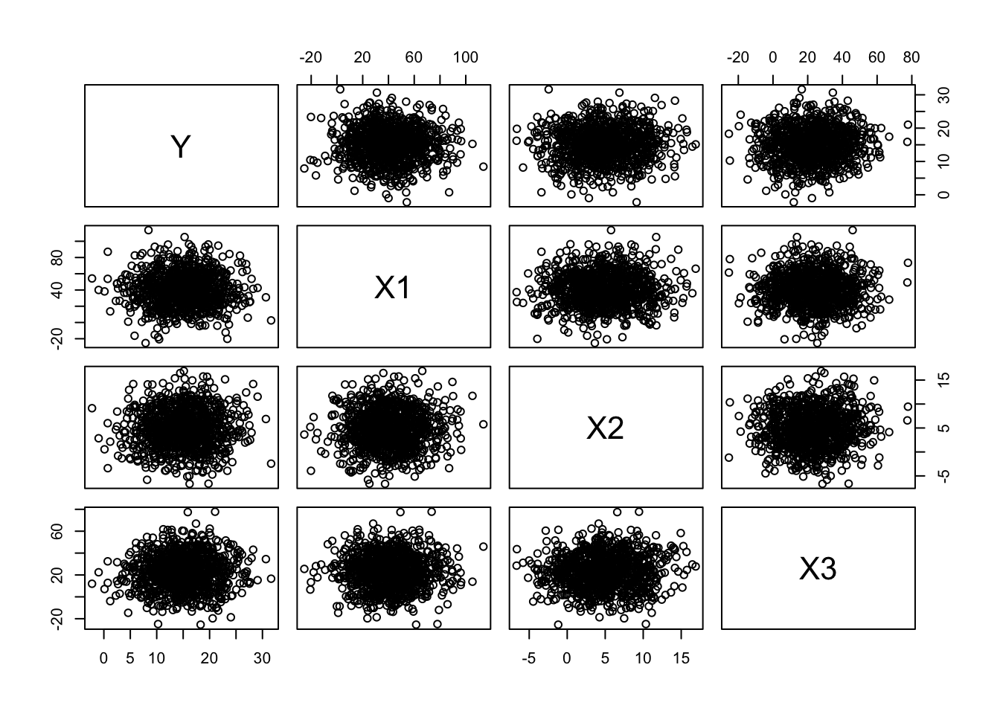
# using `pairs(original)` would do the sameNow, let’s normalize and standardize our variables by subtracting the relevant means and dividing by the standard deviation. This converts them to \(Z\) scores from a standard normal distribution.
Now run the following… note how we use the apply() and sweep() functions here. Cool, eh?
means <- apply(original, 2, FUN = "mean") # returns a vector of means, where we are taking this across dimension 2 of the array 'orig'
means## Y X1 X2 X3
## 15.024457 40.722288 4.856639 23.001342# or
means <- unlist(summarize(original, ymean = mean(Y), x1mean = mean(X1), x2mean = mean(X2),
x3mean = mean(X3)))
ms## function (..., quiet = FALSE, roll = FALSE)
## {
## out <- .parse_hms(..., order = "MS", quiet = quiet)
## if (roll) {
## hms <- .roll_hms(min = out["M", ], sec = out["S", ])
## period(hour = hms$hour, minute = hms$min, second = hms$sec)
## }
## else {
## period(minute = out["M", ], second = out["S", ])
## }
## }
## <bytecode: 0x13a428f58>
## <environment: namespace:lubridate>stdevs <- apply(original, 2, FUN = "sd")
stdevs## Y X1 X2 X3
## 5.080689 20.245347 3.977061 15.578279# or
stdevs <- unlist(summarize(original, ySD = sd(Y), x1SD = sd(X1), x2SD = sd(X2), x3SD = sd(X3)))
stdevs## ySD x1SD x2SD x3SD
## 5.080689 20.245347 3.977061 15.578279normalized <- sweep(original, 2, STATS = means, FUN = "-") # 2nd dimension is columns, removing array of means, function = subtract
normalized <- sweep(normalized, 2, STATS = stdevs, FUN = "/") # 2nd dimension is columns, scaling by array of sds, function = divide
head(normalized) # now a dataframe of Z scores## Y X1 X2 X3
## 1 0.8508262 1.89042822 -0.17405477 1.45628705
## 2 0.8135353 -0.01675842 -0.09762645 0.45600726
## 3 0.3960719 -0.71087235 -0.21354680 1.00329313
## 4 1.5356291 -1.75086861 -1.30024444 -0.24534453
## 5 1.3861295 0.33532149 -1.41623905 -0.38206068
## 6 1.1703553 0.79483402 0.31583664 -0.08006376plot(normalized)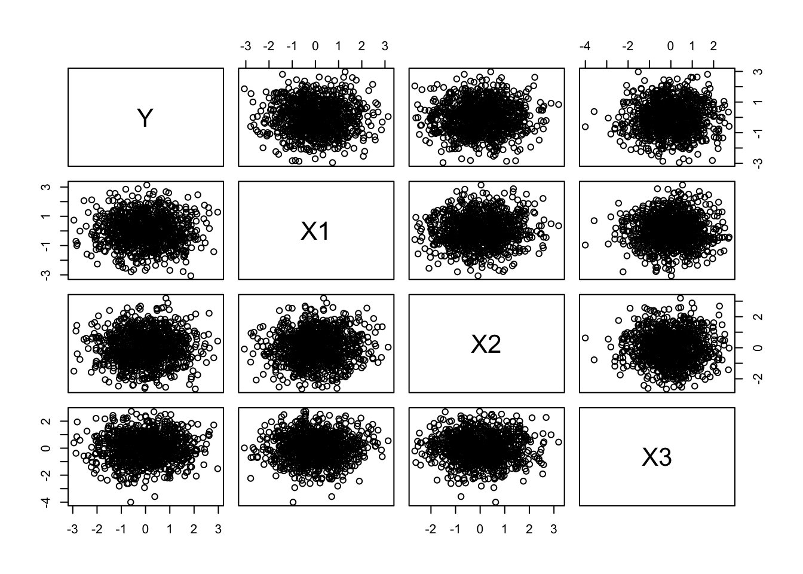
M <- as.matrix(normalized) # define M as our matrix of normalized variablesWith apply(), we apply a function to a specified margin of an array or matrix (1 = row, 2 = column), and with sweep() we then perform whatever function is specified by FUN= on all of the elements in an array specified by the given margin.
Next, we take what is called the Cholesky decomposition of our correlation matrix, R, and then multiply our normalized data matrix by the decomposition matrix to yield a transformed dataset with the specified correlation among variables. The Cholesky decomposition breaks certain symmetric matrices into two such that:
\(R = U \cdot U^T\)
U = chol(R)
newM = M %*% U
new = as.data.frame(newM)
names(new) = c("Y", "X1", "X2", "X3")
cor(new) # note that is correlation matrix is what we are aiming for!## Y X1 X2 X3
## Y 1.0000000 0.8015366 -0.4748912 0.0573363
## X1 0.8015366 1.0000000 -0.2680911 0.3468081
## X2 -0.4748912 -0.2680911 1.0000000 0.6000199
## X3 0.0573363 0.3468081 0.6000199 1.0000000plot(original)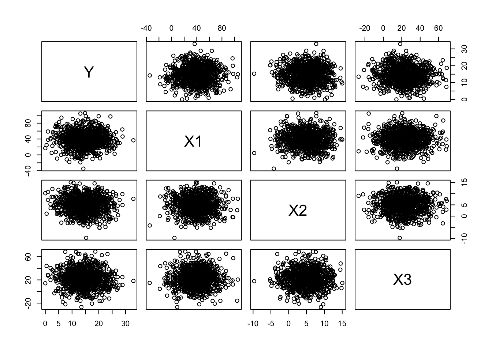
plot(new) # note the axis scales; using `pairs(new)` would plot the same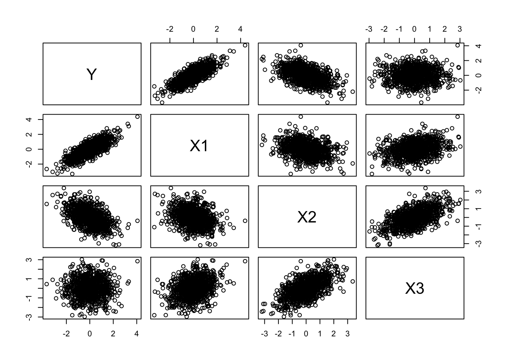
Finally, we can scale these back out to the mean and distribution of our original random variables.
d <- sweep(new, 2, STATS = stdevs, FUN = "*") # scale back out to original mean...
d <- sweep(d, 2, STATS = means, FUN = "+") # and standard deviation
head(d)## Y X1 X2 X3
## 1 19.34724 77.46593 3.829524 50.069623
## 2 19.15778 53.69496 2.897828 26.327488
## 3 17.03678 38.50206 2.876084 25.081357
## 4 22.82651 44.32560 -3.752192 -5.308254
## 5 22.06695 67.24565 -2.464134 8.529227
## 6 20.97067 69.33270 4.123684 31.414445cor(d)## Y X1 X2 X3
## Y 1.0000000 0.8015366 -0.4748912 0.0573363
## X1 0.8015366 1.0000000 -0.2680911 0.3468081
## X2 -0.4748912 -0.2680911 1.0000000 0.6000199
## X3 0.0573363 0.3468081 0.6000199 1.0000000plot(d) # note the change to the axis scales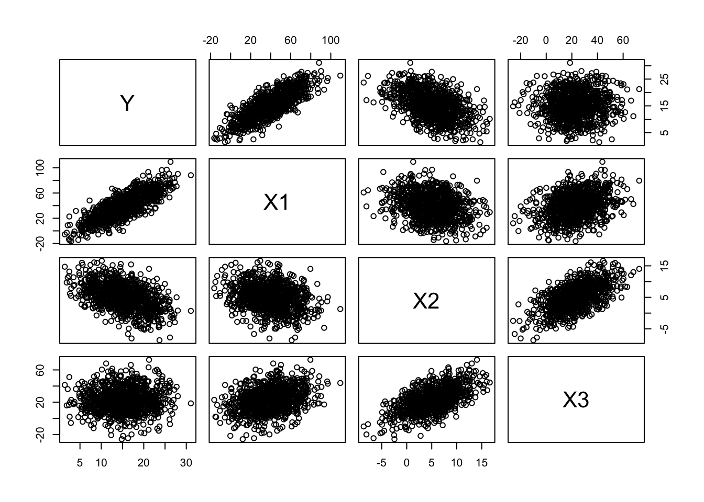
# using `pairs(d)` would produce the same plotWe now have our own dataframe, d, comprising correlated random variables in original units!
Let’s explore this dataset, first with single and then with multivariate regression.
Start off by making three bivariate scatterplots in {ggplot2} using the dataframe of three predictor variables (X1, X2, and X3) and one response variable (Y) that we generated above (or download it from “https://raw.githubusercontent.com/difiore/ada-datasets/main/multiple_regression.csv”)
f <- "https://raw.githubusercontent.com/difiore/ada-datasets/main/multiple_regression.csv"
d <- read_csv(f, col_names = TRUE)## Rows: 1000 Columns: 4
## ── Column specification ────────────────────────────────────────────────────────
## Delimiter: ","
## dbl (4): Y, X1, X2, X3
##
## ℹ Use `spec()` to retrieve the full column specification for this data.
## ℹ Specify the column types or set `show_col_types = FALSE` to quiet this message.g1 <- ggplot(data = d, aes(x = X1, y = Y)) + geom_point() + geom_smooth(method = "lm",
formula = y ~ x)
g2 <- ggplot(data = d, aes(x = X2, y = Y)) + geom_point() + geom_smooth(method = "lm",
formula = y ~ x)
g3 <- ggplot(data = d, aes(x = X3, y = Y)) + geom_point() + geom_smooth(method = "lm",
formula = y ~ x)
grid.arrange(g1, g2, g3, ncol = 3)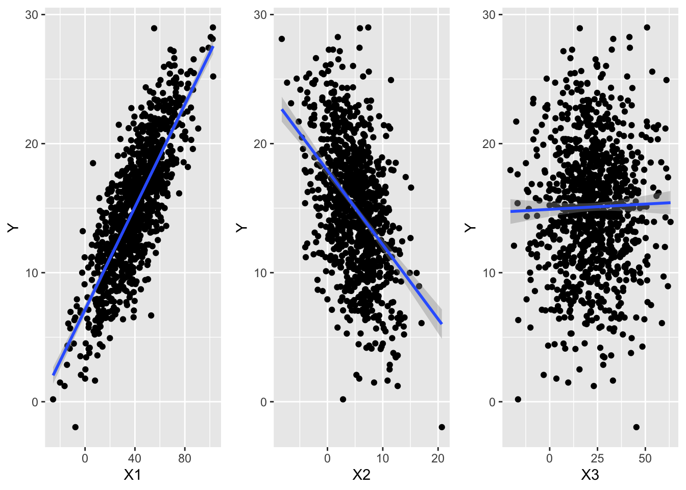
Then, using simple linear regression as implemented with lm(), how does the response variable (Y) vary with each predictor variable (X1, X2, X3)? Are the \(\beta_1\) coefficients for each bivariate significant? How much of the variation in Y does each predictor explain in a simple bivariate linear model?
m1 <- lm(data = d, formula = Y ~ X1)
summary(m1)##
## Call:
## lm(formula = Y ~ X1, data = d)
##
## Residuals:
## Min 1Q Median 3Q Max
## -10.9848 -2.1238 0.0731 2.1175 10.7924
##
## Coefficients:
## Estimate Std. Error t value Pr(>|t|)
## (Intercept) 7.132691 0.213888 33.35 <2e-16 ***
## X1 0.198846 0.004785 41.55 <2e-16 ***
## ---
## Signif. codes: 0 '***' 0.001 '**' 0.01 '*' 0.05 '.' 0.1 ' ' 1
##
## Residual standard error: 3.012 on 998 degrees of freedom
## Multiple R-squared: 0.6337, Adjusted R-squared: 0.6334
## F-statistic: 1727 on 1 and 998 DF, p-value: < 2.2e-16m2 <- lm(data = d, formula = Y ~ X2)
summary(m2)##
## Call:
## lm(formula = Y ~ X2, data = d)
##
## Residuals:
## Min 1Q Median 3Q Max
## -16.1071 -3.0301 0.1099 2.9888 15.3328
##
## Coefficients:
## Estimate Std. Error t value Pr(>|t|)
## (Intercept) 17.91187 0.22465 79.73 <2e-16 ***
## X2 -0.57531 0.03579 -16.07 <2e-16 ***
## ---
## Signif. codes: 0 '***' 0.001 '**' 0.01 '*' 0.05 '.' 0.1 ' ' 1
##
## Residual standard error: 4.435 on 998 degrees of freedom
## Multiple R-squared: 0.2057, Adjusted R-squared: 0.2049
## F-statistic: 258.4 on 1 and 998 DF, p-value: < 2.2e-16m3 <- lm(data = d, formula = Y ~ X3)
summary(m3)##
## Call:
## lm(formula = Y ~ X3, data = d)
##
## Residuals:
## Min 1Q Median 3Q Max
## -17.2471 -3.2823 0.0706 3.2325 13.9029
##
## Coefficients:
## Estimate Std. Error t value Pr(>|t|)
## (Intercept) 14.906854 0.288255 51.714 <2e-16 ***
## X3 0.008163 0.010715 0.762 0.446
## ---
## Signif. codes: 0 '***' 0.001 '**' 0.01 '*' 0.05 '.' 0.1 ' ' 1
##
## Residual standard error: 4.975 on 998 degrees of freedom
## Multiple R-squared: 0.0005812, Adjusted R-squared: -0.0004202
## F-statistic: 0.5804 on 1 and 998 DF, p-value: 0.4463In simple linear regression, Y has a significant, positive relationship with X1, a signficant negative relationship with X2, and no significant bivariate relationship with X3.
Now let’s move on to doing actual multiple regression. To review, with multiple regression, we are looking to model a response variable in terms of two or more predictor variables so we can evaluate the effect of each of several explanatory variables while holding the others constant.
Using lm() and formula notation, we can fit a model with all three predictor variables. The + sign is used to add additional predictors to our model.
m <- lm(data = d, formula = Y ~ X1 + X2 + X3)
coef(m)## (Intercept) X1 X2 X3
## 9.14885797 0.20049618 -0.19794402 -0.04931104summary(m)##
## Call:
## lm(formula = Y ~ X1 + X2 + X3, data = d)
##
## Residuals:
## Min 1Q Median 3Q Max
## -9.3943 -1.7442 -0.1112 1.8602 10.6242
##
## Coefficients:
## Estimate Std. Error t value Pr(>|t|)
## (Intercept) 9.148858 0.254643 35.928 < 2e-16 ***
## X1 0.200496 0.005680 35.297 < 2e-16 ***
## X2 -0.197944 0.033890 -5.841 7.03e-09 ***
## X3 -0.049311 0.009235 -5.339 1.15e-07 ***
## ---
## Signif. codes: 0 '***' 0.001 '**' 0.01 '*' 0.05 '.' 0.1 ' ' 1
##
## Residual standard error: 2.7 on 996 degrees of freedom
## Multiple R-squared: 0.7062, Adjusted R-squared: 0.7053
## F-statistic: 798.1 on 3 and 996 DF, p-value: < 2.2e-16Next, let’s check if our residuals are random normal…
plot(fitted(m), residuals(m))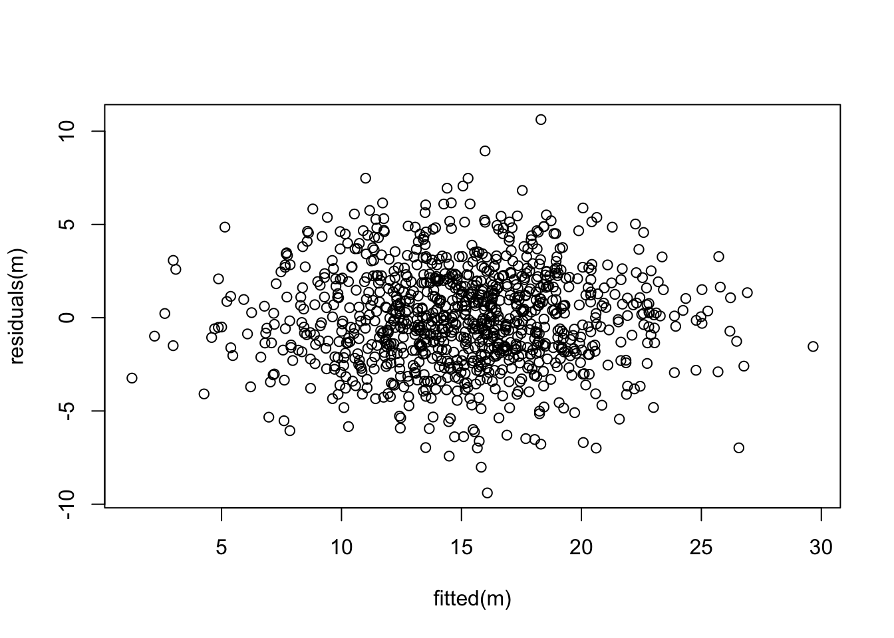
hist(residuals(m))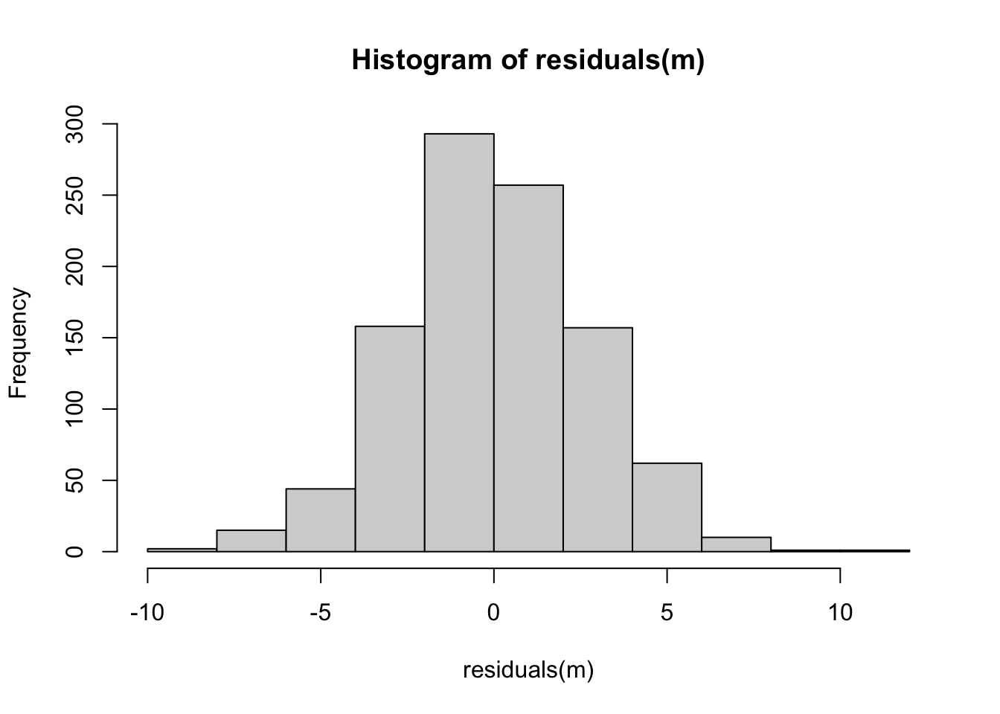
qqnorm(residuals(m))
qqline(residuals(m))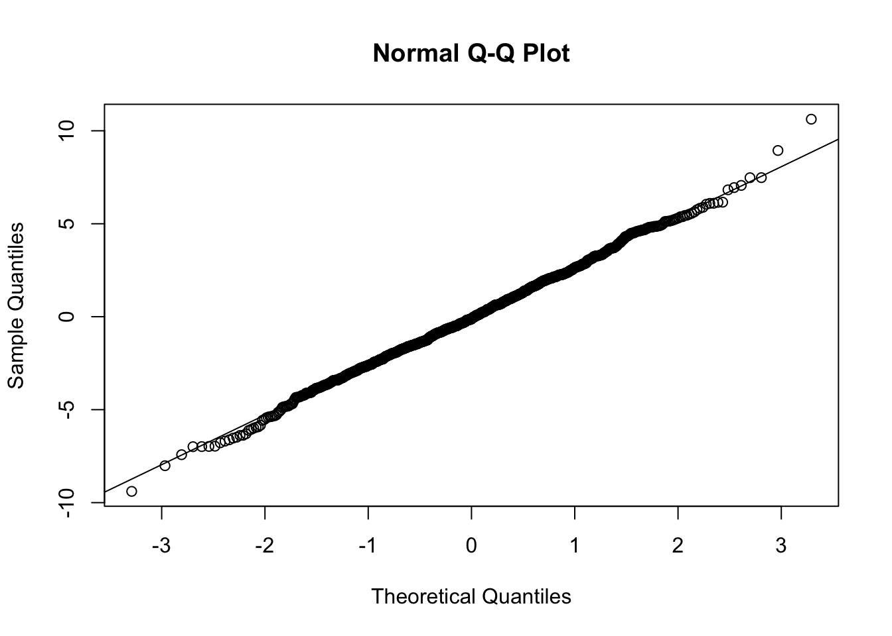
What does this output tell us? First off, the results of the omnibus F test tells us that the overall model is significant; using these three variables, we explain signficantly more of the variation in the response variable, Y, than we would using a model with just an intercept, i.e., just that \(Y\) = mean(\(Y\)).
For a multiple regression model, we calculate the F statistic as follows:
\[F = \frac{R^2(n-p-1)}{(1-R^2)p}\]
where…
f <- (summary(m)$r.squared * (nrow(df) - (ncol(df) - 1) - 1))/((1 - summary(m)$r.squared) *
(ncol(df) - 1))
f## numeric(0)Is this F ratio significant?
1 - pf(q = f, df1 = nrow(df) - (ncol(df) - 1) - 1, df2 = ncol(df) - 1)## numeric(0)Second, looking at summary() we see that the \(\beta\) coefficient for each of our predictor variables (including X3) is significant. That is, each predictor is significant even when the effects of the other predictor variables are held constant. Recall that in the simple linear regression, the \(\beta\) coefficient for X3 was not significant.
Third, we can interpret our \(\beta\) coefficients as we did in simple linear regression… for each change of one unit in a particular predictor variable (holding the other predictors constant), our predicted value of the response variable changes \(\beta\) units.
We can use the versatile {effects} package to visualize the results of a variety of model objects, include general and generalized linear models and mixed effects models. The function predictorEffects() with no arguments will display the linear relationship between the response variable and each predictor.
plot(predictorEffects(m))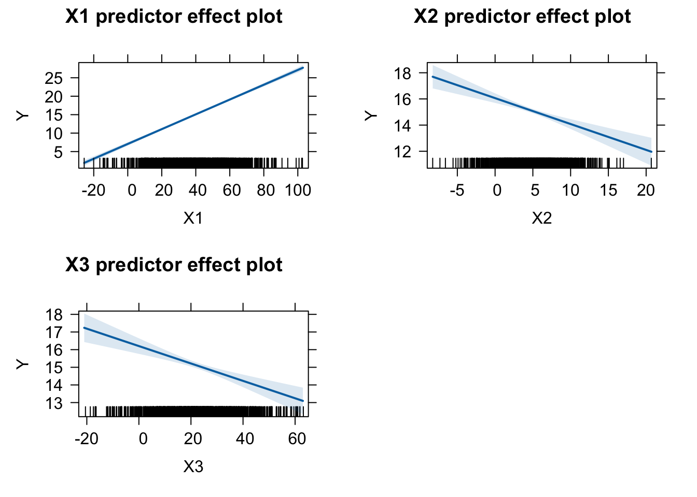
We can also specify particular predictors we wish to look at by adding the “predictors = ~” argument…
plot(predictorEffects(m, predictors = ~X1))
Specifying the argument “partial.residuals = TRUE” returns the same plots as above, plus the values of the residuals after subtracting off the contribution from all other explanatory variables as well as a loess smoothed line of best fit through the residuals. Such plots are useful for detecting, for example, nonlinear relationships or interactions between predictors that are not obvious from looking at the original data.
plot(predictorEffects(m, partial.residuals = TRUE))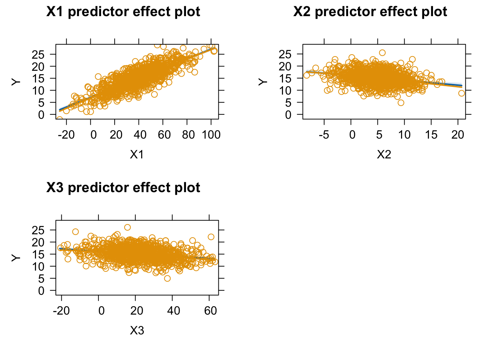
The {ggeffects} package allows us to similarly predict and plot marginal effects from a model object. The predict_response() function takes a model object and one or more focal terms and returns the predicted values for the response variable across values of the focal term, along a specified margin (“mean_reference” by default) for the nonfocal terms. These can then be plotted with the plot() function.
library(ggeffects)
p <- predict_response(m, "X1 [all]")
plot(p)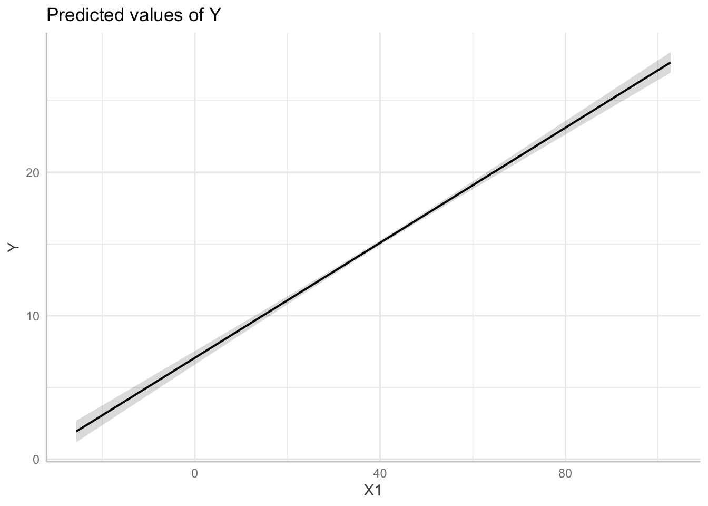
plot(p, show_data = TRUE, jitter = 0.1) # superimpose original data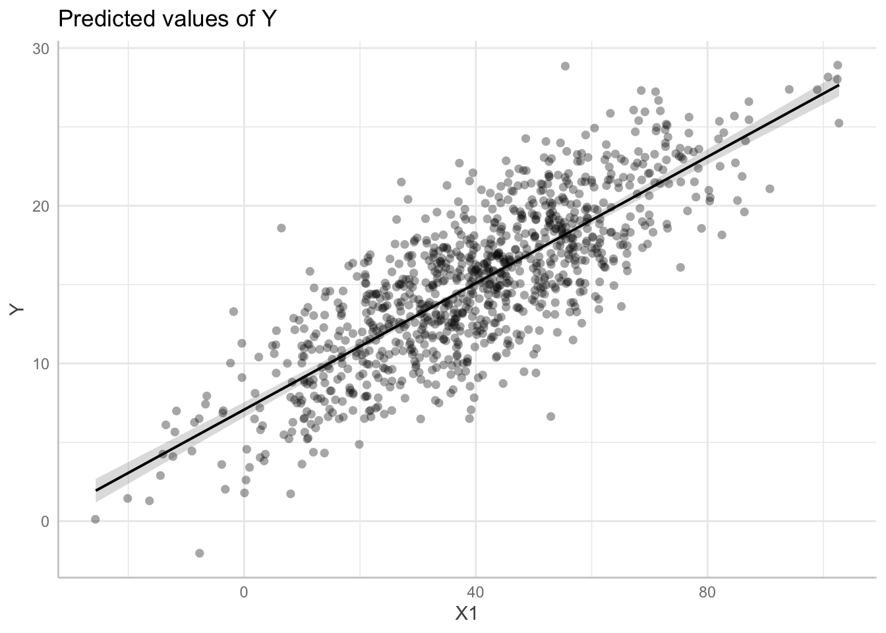
plot(p, show_residuals = TRUE, show_residuals_line = TRUE, jitter = 0.1) # superimpose residuals and loess smoothed line of best fit## `geom_smooth()` using formula = 'y ~ x'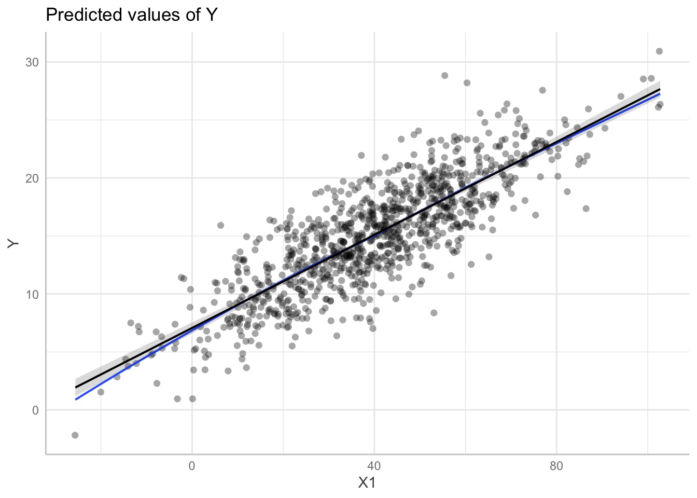
detach(package:ggeffects)Load up the “zombies.csv” dataset with the characteristics of zombie apocalypse survivors again and run a linear model of height as a function of both weight and age. Is the overall model significant? Are both predictor variables significant when the other is controlled for? Make effects plots for each variable, plotting the partial residuals and the loess smoothed relationship between the residuals and each predictor.
f <- "https://raw.githubusercontent.com/difiore/ada-datasets/main/zombies.csv"
d <- read_csv(f, col_names = TRUE)## Rows: 1000 Columns: 10
## ── Column specification ────────────────────────────────────────────────────────
## Delimiter: ","
## chr (4): first_name, last_name, gender, major
## dbl (6): id, height, weight, zombies_killed, years_of_education, age
##
## ℹ Use `spec()` to retrieve the full column specification for this data.
## ℹ Specify the column types or set `show_col_types = FALSE` to quiet this message.head(d)## # A tibble: 6 × 10
## id first_name last_name gender height weight zombies_killed
## <dbl> <chr> <chr> <chr> <dbl> <dbl> <dbl>
## 1 1 Sarah Little Female 62.9 132. 2
## 2 2 Mark Duncan Male 67.8 146. 5
## 3 3 Brandon Perez Male 72.1 153. 1
## 4 4 Roger Coleman Male 66.8 130. 5
## 5 5 Tammy Powell Female 64.7 132. 4
## 6 6 Anthony Green Male 71.2 153. 1
## # ℹ 3 more variables: years_of_education <dbl>, major <chr>, age <dbl>m <- lm(data = d, height ~ weight + age)
summary(m)##
## Call:
## lm(formula = height ~ weight + age, data = d)
##
## Residuals:
## Min 1Q Median 3Q Max
## -5.2278 -1.1782 -0.0574 1.1566 5.4117
##
## Coefficients:
## Estimate Std. Error t value Pr(>|t|)
## (Intercept) 31.763388 0.470797 67.47 <2e-16 ***
## weight 0.163107 0.002976 54.80 <2e-16 ***
## age 0.618270 0.018471 33.47 <2e-16 ***
## ---
## Signif. codes: 0 '***' 0.001 '**' 0.01 '*' 0.05 '.' 0.1 ' ' 1
##
## Residual standard error: 1.64 on 997 degrees of freedom
## Multiple R-squared: 0.8555, Adjusted R-squared: 0.8553
## F-statistic: 2952 on 2 and 997 DF, p-value: < 2.2e-16plot(predictorEffects(m, partial.residuals = TRUE))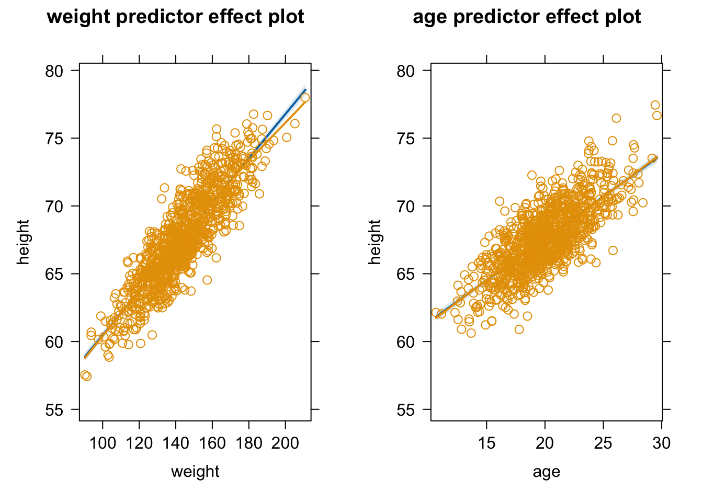
We can use the same linear modeling approach to do analysis of covariance, or ANCOVA, where we have a continuous response variable and a combination of continuous and categorical predictor variables. Let’s return to the “zombies.csv” dataset and now include one continuous and one categorical variable in our model… we want to predict height as a function of age (a continuous variable) and gender (a categorical variable), and we want to use Type II regression (because we have an unbalanced design). What is our model formula?
d$gender <- factor(d$gender)
m <- lm(data = d, formula = height ~ gender + age)
summary(m)##
## Call:
## lm(formula = height ~ gender + age, data = d)
##
## Residuals:
## Min 1Q Median 3Q Max
## -10.1909 -1.7173 0.1217 1.7670 7.6746
##
## Coefficients:
## Estimate Std. Error t value Pr(>|t|)
## (Intercept) 46.74251 0.56869 82.19 <2e-16 ***
## genderMale 4.00224 0.16461 24.31 <2e-16 ***
## age 0.94091 0.02777 33.88 <2e-16 ***
## ---
## Signif. codes: 0 '***' 0.001 '**' 0.01 '*' 0.05 '.' 0.1 ' ' 1
##
## Residual standard error: 2.603 on 997 degrees of freedom
## Multiple R-squared: 0.6361, Adjusted R-squared: 0.6354
## F-statistic: 871.5 on 2 and 997 DF, p-value: < 2.2e-16m.aov <- Anova(m, type = "II")
m.aov## Anova Table (Type II tests)
##
## Response: height
## Sum Sq Df F value Pr(>F)
## gender 4003.9 1 591.15 < 2.2e-16 ***
## age 7775.6 1 1148.01 < 2.2e-16 ***
## Residuals 6752.7 997
## ---
## Signif. codes: 0 '***' 0.001 '**' 0.01 '*' 0.05 '.' 0.1 ' ' 1plot(fitted(m), residuals(m))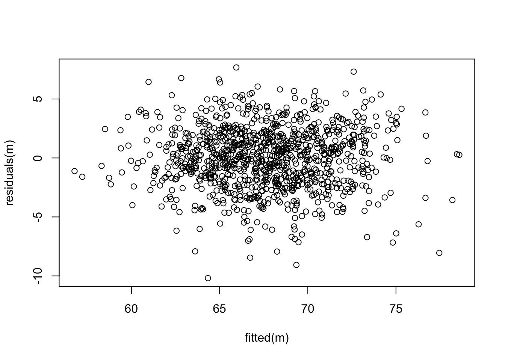
hist(residuals(m))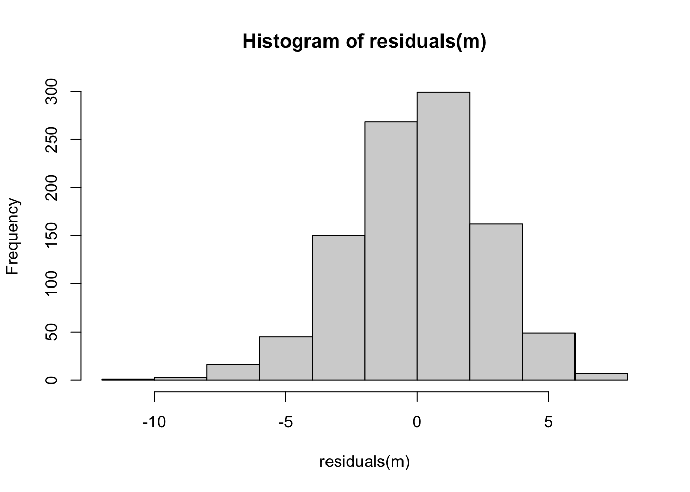
qqnorm(residuals(m))
qqline(residuals(m))
How do we interpret these results?
We can now write two equations for the relationship between height, on the one hand, and age and gender on the other:
For females…
\[height = 46.7251 + 0.94091 \times age\]
In this case, females are the first level of our “gender” factor and thus do not have additional regression coefficients associated with them.
For males…
\[height = 46.7251 + 4.00224 + 0.94091 \times age\]
Here, the additional 4.00224 added to the intercept term is the coefficient associated with genderMale
p <- ggplot(data = d, aes(x = age, y = height)) + geom_point(aes(color = factor(gender))) +
scale_color_manual(values = c("red", "blue"))
p <- p + geom_abline(slope = m$coefficients[3], intercept = m$coefficients[1], color = "darkred")
p <- p + geom_abline(slope = m$coefficients[3], intercept = m$coefficients[1] + m$coefficients[2],
color = "darkblue")
p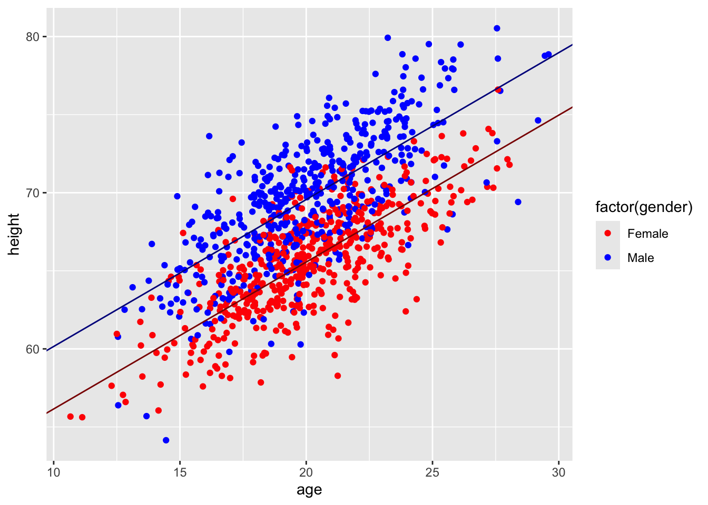
Note that this model is based on all of the data collectively… we are not doing separate linear models for males and females, which could result in different intercepts and slopes for each sex… rather, we are modeling both sexes as having the same slope but different intercepts. This is what is known as a “parallel slopes” model. Below, we will explore a model where we posit an interaction between age and sex, which would require estimation of four separate parameters (i.e., both a slope and an intercept for males and females rather than, as above, only different intercepts for males and females but the same slope for each sex).
Using the confint() function on our ANCOVA model results reveals the confidence intervals for each of the coefficients in our multiple regression, just as it did for simple regression.
confint(m, level = 0.95)## 2.5 % 97.5 %
## (Intercept) 45.6265330 47.8584809
## genderMale 3.6792172 4.3252593
## age 0.8864191 0.9954081We can also generate effects plots for this ANCOVA model:
plot(predictorEffects(m, partial.residuals = TRUE))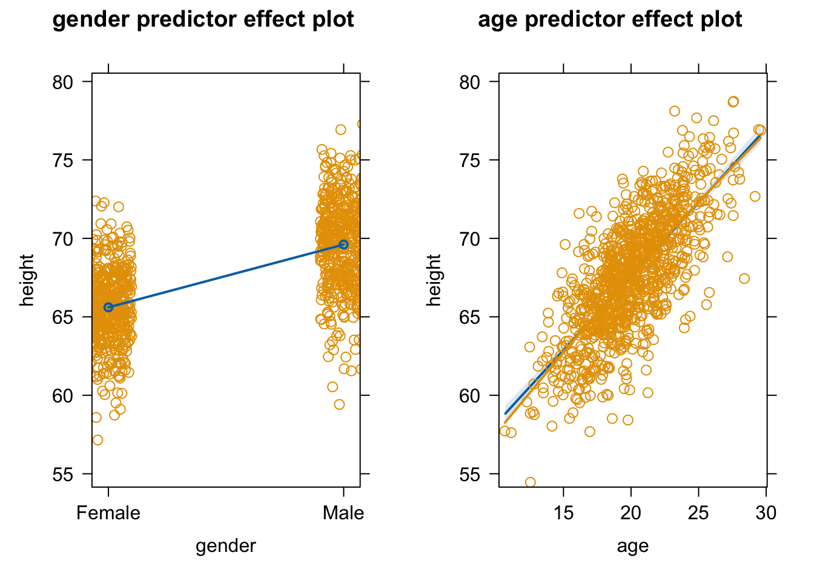
When we have more than one explanatory variable in a regression model, we need to be concerned about possible high inter-correlations those variables. One way to characterize the amount of multicollinearity is by examining the variance inflation factor, or VIF, for each variable. Mathematically, the VIF for a predictor variable i is calculated as:
\[\frac{1}{1-R_i^2}\] where \(R_i^2\) is the R-squared value for the regression of variable i on all other predictors. A high VIF indicates that the predictor is highly collinear with other predictors in the model. As a rule of thumb, a VIF value that exceeds ~5 indicates a problematic amount of multicollinearity. The function vif() from the {car} package provides one way to calculate VIFs.
Below, we set up a new model with three predictors, weight, age, and gender, and calculate VIFs:
m <- lm(height ~ weight + age + gender, data = d)
summary(m)##
## Call:
## lm(formula = height ~ weight + age + gender, data = d)
##
## Residuals:
## Min 1Q Median 3Q Max
## -5.6235 -1.0082 0.0141 0.9845 4.6444
##
## Coefficients:
## Estimate Std. Error t value Pr(>|t|)
## (Intercept) 33.309791 0.437855 76.08 <2e-16 ***
## weight 0.140542 0.003083 45.59 <2e-16 ***
## age 0.662485 0.016953 39.08 <2e-16 ***
## genderMale 1.609671 0.107436 14.98 <2e-16 ***
## ---
## Signif. codes: 0 '***' 0.001 '**' 0.01 '*' 0.05 '.' 0.1 ' ' 1
##
## Residual standard error: 1.482 on 996 degrees of freedom
## Multiple R-squared: 0.8821, Adjusted R-squared: 0.8818
## F-statistic: 2484 on 3 and 996 DF, p-value: < 2.2e-16vif(m)## weight age gender
## 1.463629 1.149158 1.313461We can also calculate VIFs manually, by running models that regress each individual predictor on all of the others…
w <- lm(weight ~ gender + age, data = d)
rsq_w <- summary(w)$r.square
(vif_w <- 1/(1 - rsq_w))## [1] 1.463629a <- lm(age ~ gender + weight, data = d)
rsq_a <- summary(a)$r.square
(vif_a <- 1/(1 - rsq_a))## [1] 1.149158# for a categorical predictor variable, we can coerce it to numeric to use it
# as a response variable
g <- lm(as.numeric(gender) ~ age + weight, data = d)
rsq_g <- summary(g)$r.square
(vif_g <- 1/(1 - rsq_g))## [1] 1.313461One common reason for fitting a regression model is to then use that model to predict the value of the response variable under particular combinations of values of predictor variables, i.e., to predict the values of new observations. We can think of the Y value predicted by the regression model (\(\hat{y}\)) as a point estimate of the response variable given particular value(s) of the predictor variable(s). This point estimate is associated with some uncertainty, which we can characterize in terms of either confidence intervals or prediction intervals around each the estimate. CIs represent uncertainty about the mean value of the response variable for a given (combination of) predictor value(s), while PIs represent our uncertainty about actual new predicted values of the response variable at those predictor value(s).
The predict() allows us to determine these intervals for individual responses for a given combination of predictor variables. predict() takes as arguments a model object, new values for the predictor(s) to be plugged into the model, an interval type (“confidence” or “prediction”), and a confidence level (e.g., “0.95”).
Let’s return to our model of height as a function of age and gender:
m <- lm(height ~ age + gender, data = d)ci <- predict(m, newdata = data.frame(age = 29, gender = "Male"), interval = "confidence",
level = 0.95)
ci## fit lwr upr
## 1 78.03124 77.49345 78.56903pi <- predict(m, newdata = data.frame(age = 29, gender = "Male"), interval = "prediction",
level = 0.95)
pi## fit lwr upr
## 1 78.03124 72.89597 83.16651In general, the width of a confidence interval for \(\hat{y}\) increases as the value of our predictor variables moves away from the center of their distribution. Also, although both are intervals are centered at \(\hat{y}\), the predicted mean value of the response variable for the given (combination of) predictor(s), the prediction interval is invariably wider than the confidence interval. This makes intuitive sense, since the prediction interval encapsulates the possibility for individual values of Y to fluctuate away from the predicted mean value, while the confidence interval describes uncertainty in estimates of the predicted mean value. That is, the estimate of the mean of a variable is expected to be less uncertain than estimates of individual variable values, because the mean is already a statistic that summarizes a set of values.
We can see this by generating CIs and PIs for a range of data using the predict() function. Below, we pass predict() a new set of 1000 values ranging from the minimum to the maximum male age in our original data set…
males <- d |>
filter(gender == "Male")
new_x <- seq(from = min(males$age), to = max(males$age), length.out = 1000)
ci <- predict(m, newdata = data.frame(age = new_x, gender = "Male"), interval = "confidence",
level = 0.95)
ci <- tibble(x = new_x, as_tibble(ci))
pi <- predict(m, newdata = data.frame(age = new_x, gender = "Male"), interval = "prediction",
level = 0.95)
pi <- as_tibble(pi)
pi <- tibble(x = new_x, as_tibble(pi))
p <- ggplot(data = d |>
filter(gender == "Male"), aes(x = age, y = height)) + geom_point() + geom_line(data = ci,
aes(x = x, y = fit), color = "red") + geom_line(data = ci, aes(x = x, y = lwr),
color = "blue") + geom_line(data = ci, aes(x = x, y = upr), color = "blue") +
geom_line(data = pi, aes(x = x, y = lwr), color = "green") + geom_line(data = pi,
aes(x = x, y = upr), color = "green")
p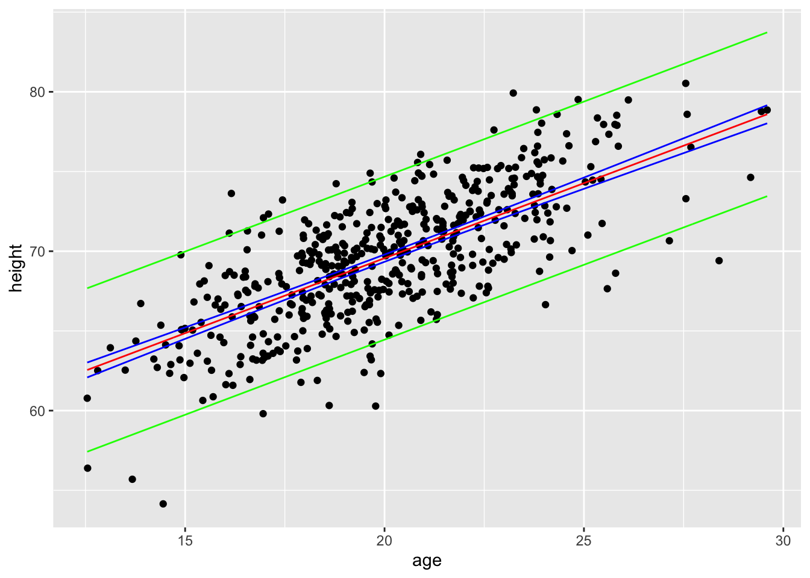
An easier, alternative way to generate CIs and PIs for across a range of predictor values iswith the augment() function from {broom}, as it returns a “tibble” with fitted values and interval limits appended to the original data frame.
ci <- augment(m, data = d, interval = c("confidence"))
pi <- augment(m, data = d, interval = c("prediction"))
p <- ggplot(data = ci |>
filter(gender == "Male"), aes(x = age, y = height)) + geom_point() + geom_line(aes(x = age,
y = .fitted), color = "red") + geom_ribbon(aes(x = age, ymin = .lower, ymax = .upper),
alpha = 0.5) + geom_ribbon(data = pi |>
filter(gender == "Male"), aes(x = age, ymin = .lower, ymax = .upper), alpha = 0.1)
p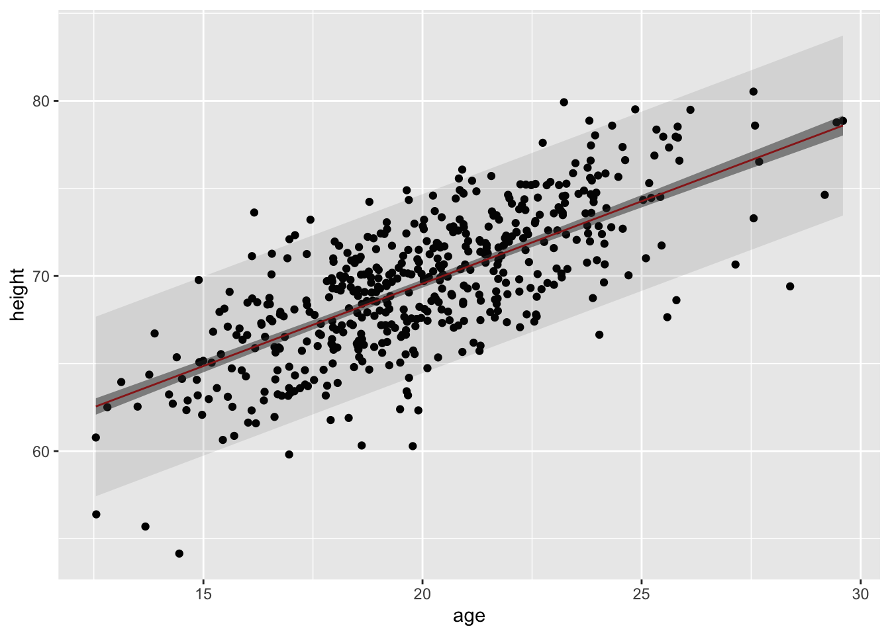
So far, we have only considered the joint main effects of multiple predictors on a response variable, but often there are interactive effects between our predictors. An interactive effect is an additional change in the response that occurs because of particular combinations of predictors or because the relationship of one continuous variable to a response is contingent on a particular level of a categorical variable. We explored the former case a bit when we looked at ANOVAs involving two discrete predictors. Now, we’ll consider the latter case… is there an interactive effect of sex AND age on height in our population of zombie apocalypse survivors?
Using formula notation, it is easy for us to consider interactions between predictors. The colon (:) operator allows us to specify particular interactions we want to consider. We can also use the asterisk (*) operator to specify a full model, i.e., all single terms factors and all their interactions.
What are the formula and results for a linear model of height as a function of age and sex plus the interaction of age and sex?
m <- lm(data = d, height ~ age + gender + age:gender)
summary(m)##
## Call:
## lm(formula = height ~ age + gender + age:gender, data = d)
##
## Residuals:
## Min 1Q Median 3Q Max
## -9.7985 -1.6973 0.1189 1.7662 7.9473
##
## Coefficients:
## Estimate Std. Error t value Pr(>|t|)
## (Intercept) 48.18107 0.79839 60.348 <2e-16 ***
## age 0.86913 0.03941 22.053 <2e-16 ***
## genderMale 1.15975 1.12247 1.033 0.3018
## age:genderMale 0.14179 0.05539 2.560 0.0106 *
## ---
## Signif. codes: 0 '***' 0.001 '**' 0.01 '*' 0.05 '.' 0.1 ' ' 1
##
## Residual standard error: 2.595 on 996 degrees of freedom
## Multiple R-squared: 0.6385, Adjusted R-squared: 0.6374
## F-statistic: 586.4 on 3 and 996 DF, p-value: < 2.2e-16# or
m <- lm(data = d, height ~ age * gender)
summary(m)##
## Call:
## lm(formula = height ~ age * gender, data = d)
##
## Residuals:
## Min 1Q Median 3Q Max
## -9.7985 -1.6973 0.1189 1.7662 7.9473
##
## Coefficients:
## Estimate Std. Error t value Pr(>|t|)
## (Intercept) 48.18107 0.79839 60.348 <2e-16 ***
## age 0.86913 0.03941 22.053 <2e-16 ***
## genderMale 1.15975 1.12247 1.033 0.3018
## age:genderMale 0.14179 0.05539 2.560 0.0106 *
## ---
## Signif. codes: 0 '***' 0.001 '**' 0.01 '*' 0.05 '.' 0.1 ' ' 1
##
## Residual standard error: 2.595 on 996 degrees of freedom
## Multiple R-squared: 0.6385, Adjusted R-squared: 0.6374
## F-statistic: 586.4 on 3 and 996 DF, p-value: < 2.2e-16coefficients(m)## (Intercept) age genderMale age:genderMale
## 48.1810741 0.8691284 1.1597481 0.1417928Here, when we allow an interaction, there is no main effect of gender, but there is an interaction effect of gender and age.
If we want to visualize this…
\[ female\ height = 48.1817041 + 0.8891281 \times age\] \[ male\ height = 48.1817041 + + 1.1597481 + 0.1417928 \times age\]
p1 <- ggplot(data = d, aes(x = age, y = height)) + geom_point(aes(color = factor(gender))) +
scale_color_manual(values = c("red", "blue"))
p1 <- p1 + geom_abline(slope = m$coefficients[2], intercept = m$coefficients[1],
color = "darkred")
p1 <- p1 + geom_abline(slope = m$coefficients[2] + m$coefficients[4], intercept = m$coefficients[1] +
m$coefficients[3], color = "darkblue")
p1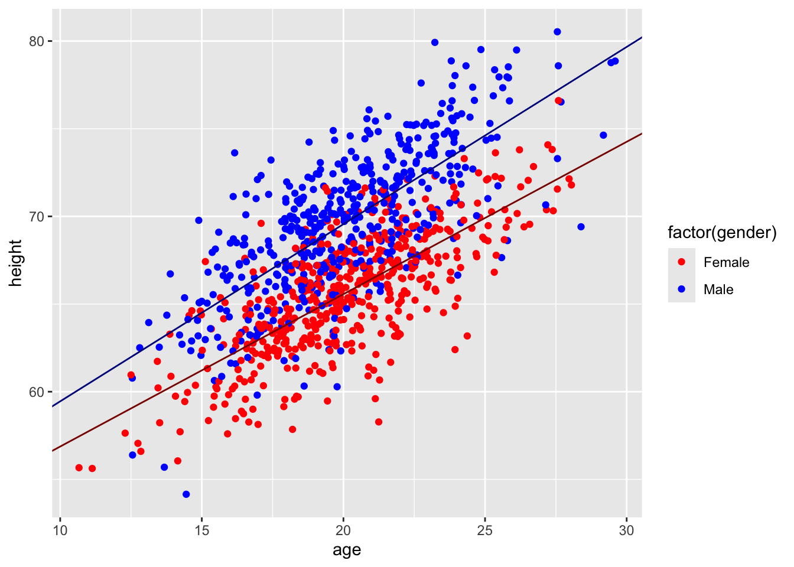
# or, using `geom_smooth()`...
p2 <- ggplot(data = d, aes(x = age, y = height)) + geom_point(aes(color = factor(gender))) +
scale_color_manual(values = c("red", "blue")) + geom_smooth(method = "lm", aes(color = factor(gender)))
p2## `geom_smooth()` using formula = 'y ~ x'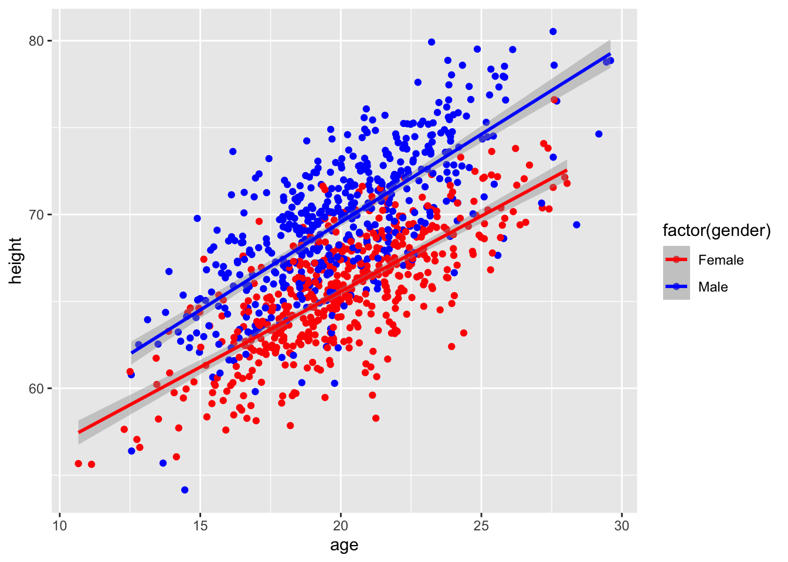
The predictorEffects() function from {effects} provides and alternative way to visualize interactions…
plot(predictorEffects(m, predictors = ~age))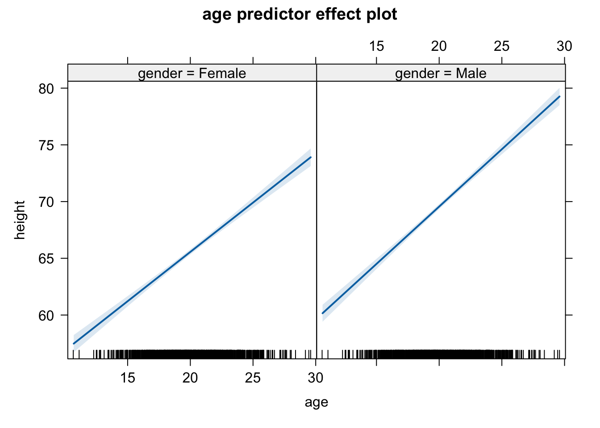
plot(predictorEffects(m, predictors = ~gender))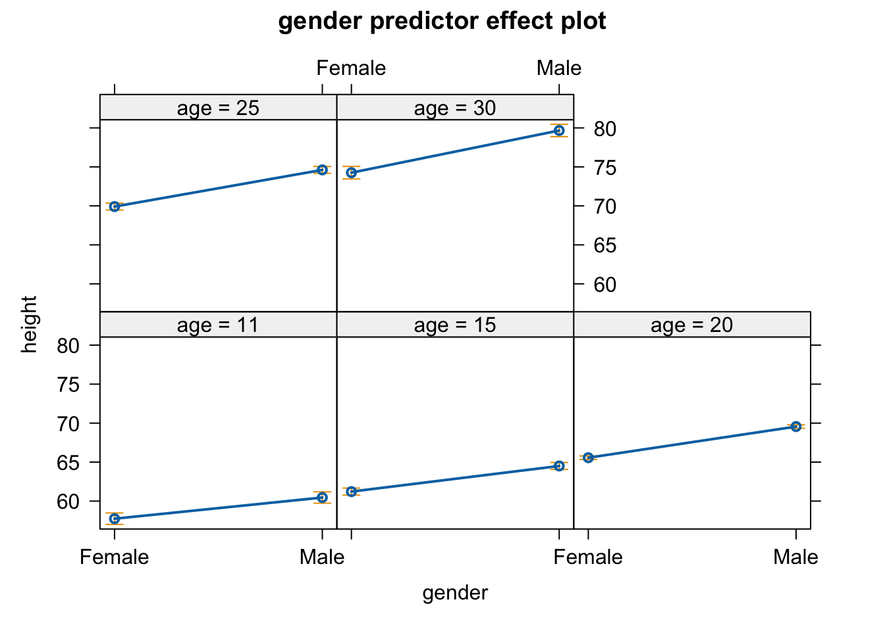
In the case of gender, the function plots the difference in predicted height of females and males as a set of levels specified by the argument “xlevels=”. The argument can be set to a particular number of levels (which is 5 by default, as in the example above) or it can be passed a list with elements named for the predictors, with either the number of level or a vector of level values added.
plot(predictorEffects(m, predictors = ~gender, xlevels = list(age = 6))) # 6 ages, spanning the range of ages in the dataset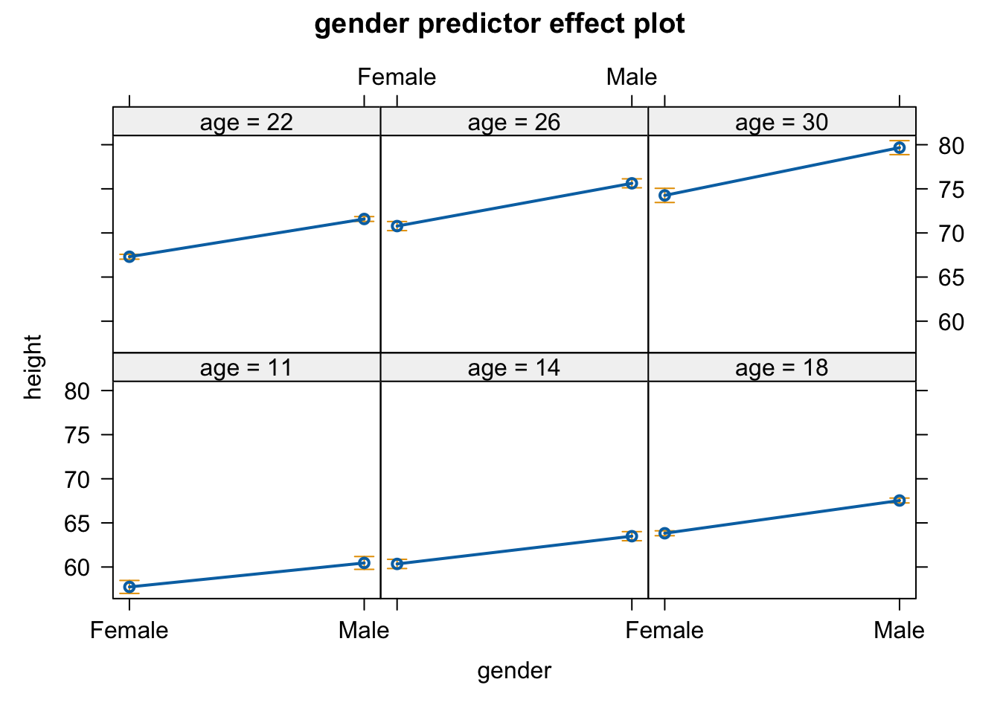
plot(predictorEffects(m, predictors = ~gender, xlevels = list(age = c(10, 15, 20)))) # 3 ages, specified by the user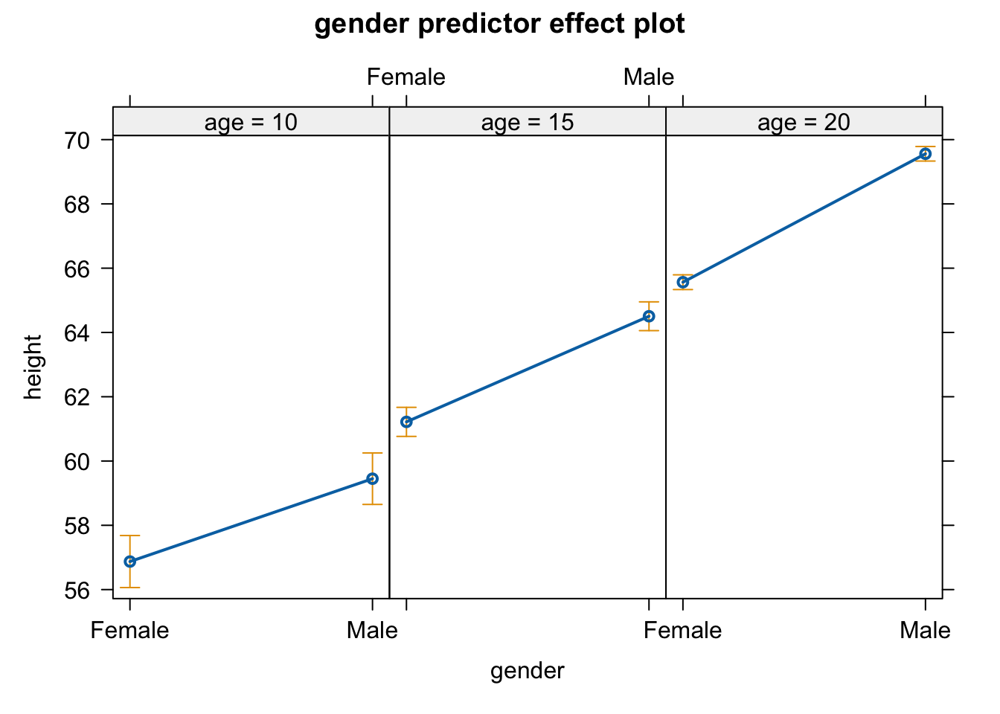
f <- "https://raw.githubusercontent.com/difiore/ada-datasets/main/KamilarAndCooperData.csv"
d <- read_csv(f, col_names = TRUE)## Rows: 213 Columns: 45
## ── Column specification ────────────────────────────────────────────────────────
## Delimiter: ","
## chr (17): Scientific_Name, Superfamily, Family, Genus, Species, Brain_size_R...
## dbl (28): Brain_Size_Species_Mean, Brain_Size_Female_Mean, Body_mass_male_me...
##
## ℹ Use `spec()` to retrieve the full column specification for this data.
## ℹ Specify the column types or set `show_col_types = FALSE` to quiet this message.d$Family <- factor(d$Family)
head(d)## # A tibble: 6 × 45
## Scientific_Name Superfamily Family Genus Species Brain_Size_Species_M…¹
## <chr> <chr> <fct> <chr> <chr> <dbl>
## 1 Allenopithecus_nigrov… Cercopithe… Cerco… Alle… nigrov… 58.0
## 2 Allocebus_trichotis Cercopithe… Cerco… Allo… tricho… NA
## 3 Alouatta_belzebul Ceboidea Ateli… Alou… belzeb… 52.8
## 4 Alouatta_caraya Ceboidea Ateli… Alou… caraya 52.6
## 5 Alouatta_guariba Ceboidea Ateli… Alou… guariba 51.7
## 6 Alouatta_palliata Ceboidea Ateli… Alou… pallia… 49.9
## # ℹ abbreviated name: ¹Brain_Size_Species_Mean
## # ℹ 39 more variables: Brain_Size_Female_Mean <dbl>, Brain_size_Ref <chr>,
## # Body_mass_male_mean <dbl>, Body_mass_female_mean <dbl>,
## # Mass_Dimorphism <dbl>, Mass_Ref <chr>, MeanGroupSize <dbl>,
## # AdultMales <dbl>, AdultFemale <dbl>, AdultSexRatio <dbl>,
## # Social_Organization_Ref <chr>, InterbirthInterval_d <dbl>, Gestation <dbl>,
## # WeaningAge_d <dbl>, MaxLongevity_m <dbl>, LitterSz <dbl>, …d <- d |>
select(Brain_Size_Female_Mean, Family, Body_mass_female_mean, MeanGroupSize,
DayLength_km, HomeRange_km2, Move) |>
rename(BrainSize = Brain_Size_Female_Mean, BodyMass = Body_mass_female_mean,
GroupSize = MeanGroupSize, DayLength = DayLength_km, HomeRange = HomeRange_km2)m <- lm(data = d, log(HomeRange) ~ log(BodyMass) + log(BrainSize) + GroupSize + Move)
summary(m)##
## Call:
## lm(formula = log(HomeRange) ~ log(BodyMass) + log(BrainSize) +
## GroupSize + Move, data = d)
##
## Residuals:
## Min 1Q Median 3Q Max
## -3.7978 -0.6473 -0.0038 0.8807 2.1598
##
## Coefficients:
## Estimate Std. Error t value Pr(>|t|)
## (Intercept) -6.955853 1.957472 -3.553 0.000865 ***
## log(BodyMass) 0.315276 0.468439 0.673 0.504153
## log(BrainSize) 0.614460 0.591100 1.040 0.303771
## GroupSize 0.034026 0.009793 3.475 0.001095 **
## Move 0.025916 0.019559 1.325 0.191441
## ---
## Signif. codes: 0 '***' 0.001 '**' 0.01 '*' 0.05 '.' 0.1 ' ' 1
##
## Residual standard error: 1.127 on 48 degrees of freedom
## (160 observations deleted due to missingness)
## Multiple R-squared: 0.6359, Adjusted R-squared: 0.6055
## F-statistic: 20.95 on 4 and 48 DF, p-value: 4.806e-10plot(m$residuals)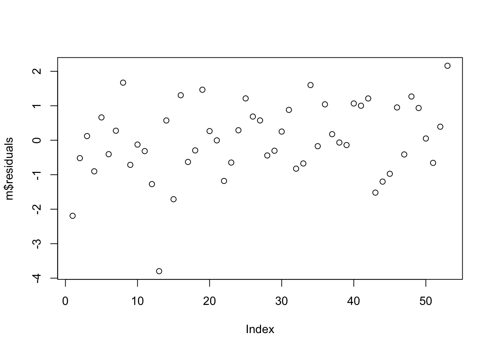
qqnorm(m$residuals)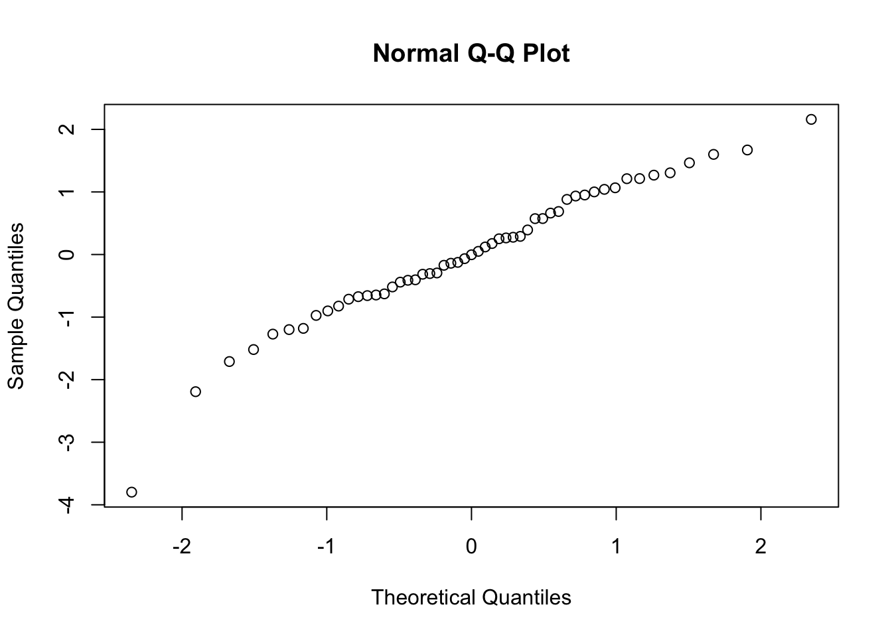
shapiro.test(m$residuals)##
## Shapiro-Wilk normality test
##
## data: m$residuals
## W = 0.96517, p-value = 0.1242When we plot effects for this model, note that the predictor effect plot uses untransformed predictor values on the horizontal axis, not the log-transformed variables that we used in the regression model.
plot(predictorEffects(m, partial.residuals = TRUE))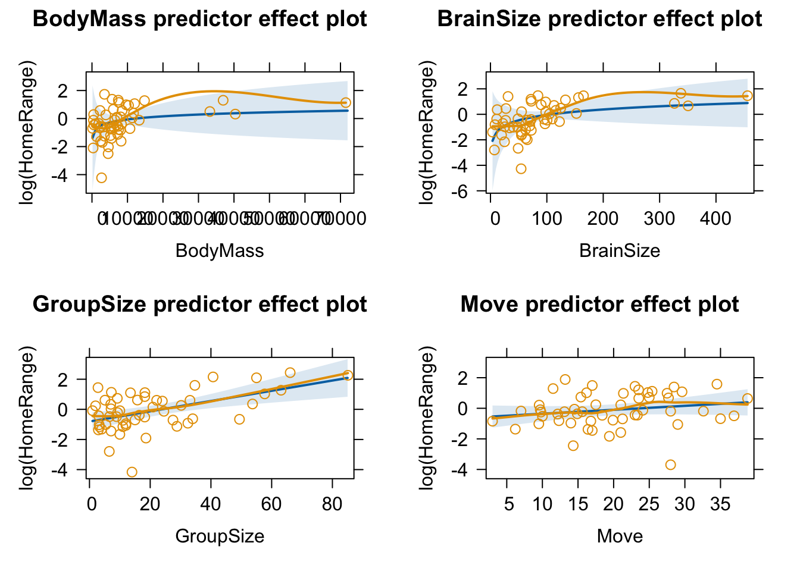
We can use the “axes=” argument and the “x=” sub-argument to transform the horizontal axis, for example to replace BodyMass by log(BodyMass). The code below specifies a lot of tweaks to the x axis…
plot(predictorEffects(m, ~BodyMass, partial.residuals = TRUE), axes = list(x = list(rotate = 90,
BodyMass = list(transform = list(trans = log, inverse = exp), lab = "log(Body Mass)",
ticks = list(at = c(100, 1000, 10000, 1e+05)), lim = c(100, 1e+05)))))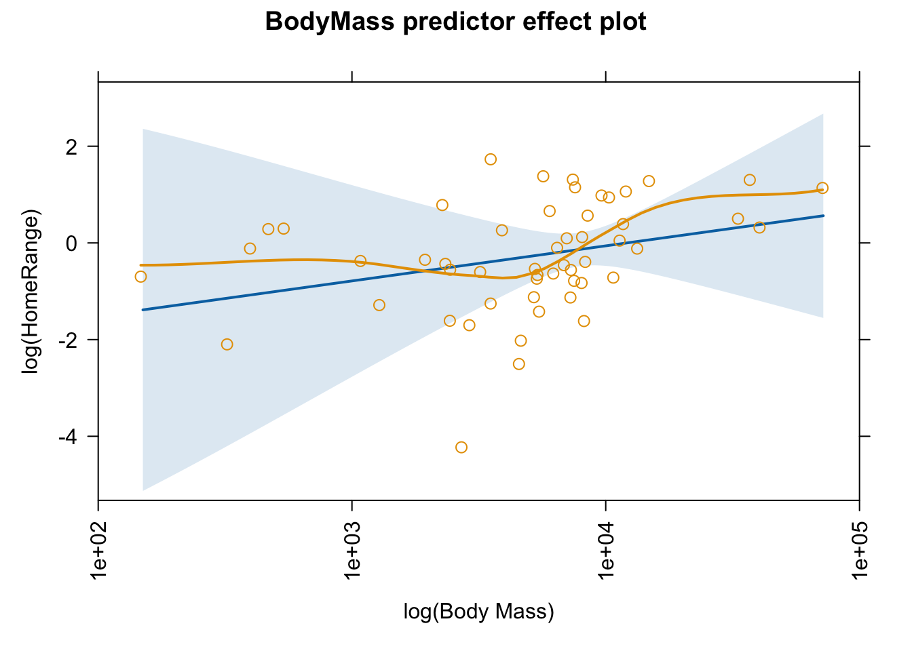
m <- lm(data = d, log(HomeRange) ~ log(BodyMass) + log(BrainSize) + GroupSize)
summary(m)##
## Call:
## lm(formula = log(HomeRange) ~ log(BodyMass) + log(BrainSize) +
## GroupSize, data = d)
##
## Residuals:
## Min 1Q Median 3Q Max
## -3.7982 -0.7310 -0.0140 0.8386 3.1926
##
## Coefficients:
## Estimate Std. Error t value Pr(>|t|)
## (Intercept) -5.354845 1.176046 -4.553 1.45e-05 ***
## log(BodyMass) -0.181627 0.311382 -0.583 0.560972
## log(BrainSize) 1.390536 0.398840 3.486 0.000721 ***
## GroupSize 0.030433 0.008427 3.611 0.000473 ***
## ---
## Signif. codes: 0 '***' 0.001 '**' 0.01 '*' 0.05 '.' 0.1 ' ' 1
##
## Residual standard error: 1.228 on 103 degrees of freedom
## (106 observations deleted due to missingness)
## Multiple R-squared: 0.6766, Adjusted R-squared: 0.6672
## F-statistic: 71.85 on 3 and 103 DF, p-value: < 2.2e-16plot(m$residuals)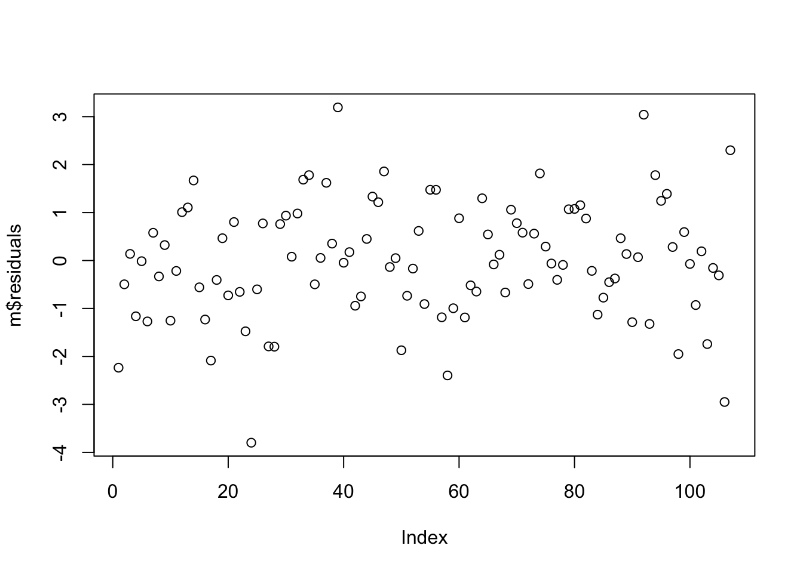
qqnorm(m$residuals)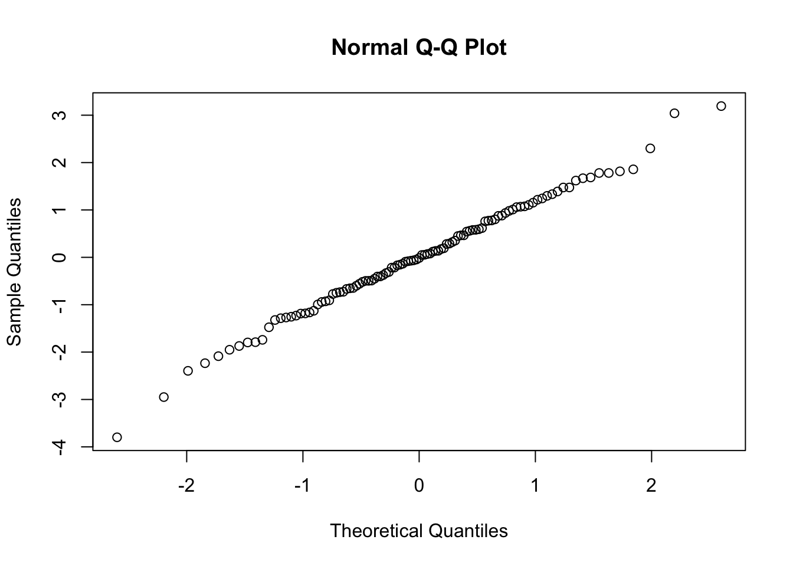
shapiro.test(m$residuals) # no significant deviation from normal##
## Shapiro-Wilk normality test
##
## data: m$residuals
## W = 0.99366, p-value = 0.9058We have already seen lots of ways to view linear modeling results, e.g., by using the summary(), glance(), and tidy() functions with model objects as arguments. The {jtools} package provides some interesting additional functions for summarizing and visualizing regression models results.
summ() function is an alternative to summary() that provides a concise table of a model and its results. It can be used with standard lm() simple linear regression results (as we work with in this module) as well as with glm() and lmer() results (for generalized linear modeling and mixed effects modeling, respectively), as we cover in Module 23 and Module 24.effect_plot() function can be used to plot the relationship between (one of) the predictor variables and the response variable while holding the others constant. The function contains lots of possible arguments for customizing the plot, e.g., for specifying whether and what types of interval can be plotted.plot_summs() function can be used to nicely visualize coefficient estimates and CI values around those terms, including visualizing multiple models on the same plot.Let’s return to working with the zombie apocaluypse survivors dataset…
f <- "https://raw.githubusercontent.com/difiore/ada-datasets/main/zombies.csv"
d <- read_csv(f, col_names = TRUE)
library(jtools)
m1 <- lm(data = d, height ~ age + weight + gender + zombies_killed)
summ(m1, confint = TRUE, ci.width = 0.95, digits = 3)| Observations | 1000 |
| Dependent variable | height |
| Type | OLS linear regression |
| F(4,995) | 1863.277 |
| R² | 0.882 |
| Adj. R² | 0.882 |
| Est. | 2.5% | 97.5% | t val. | p | |
|---|---|---|---|---|---|
| (Intercept) | 33.219 | 32.340 | 34.098 | 74.185 | 0.000 |
| age | 0.662 | 0.629 | 0.696 | 39.060 | 0.000 |
| weight | 0.141 | 0.135 | 0.147 | 45.586 | 0.000 |
| genderMale | 1.609 | 1.398 | 1.820 | 14.974 | 0.000 |
| zombies_killed | 0.026 | -0.027 | 0.079 | 0.970 | 0.332 |
| Standard errors: OLS |
effect_plot(m1, pred = age, interval = TRUE, int.type = "confidence", int.width = 0.95,
plot.points = TRUE)
m2 <- lm(data = d, height ~ age + weight + gender)
m3 <- lm(data = d, height ~ age + gender)
m4 <- lm(data = d, height ~ weight + gender)
m5 <- lm(data = d, height ~ gender)
# plot with unstandardized beta coefficients
plot_summs(m1)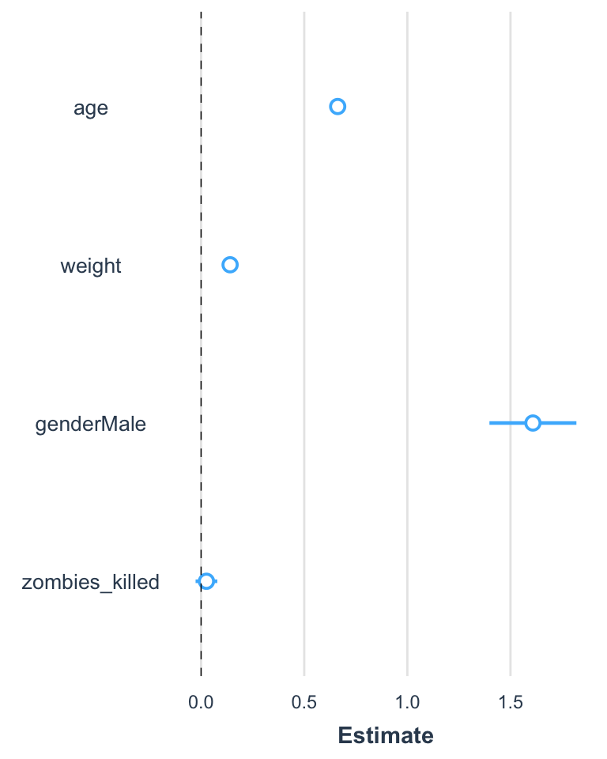
# plot with standardized beta coefficients (i.e., mean centers the variables
# and sets SD to 1)
plot_summs(m1, scale = TRUE)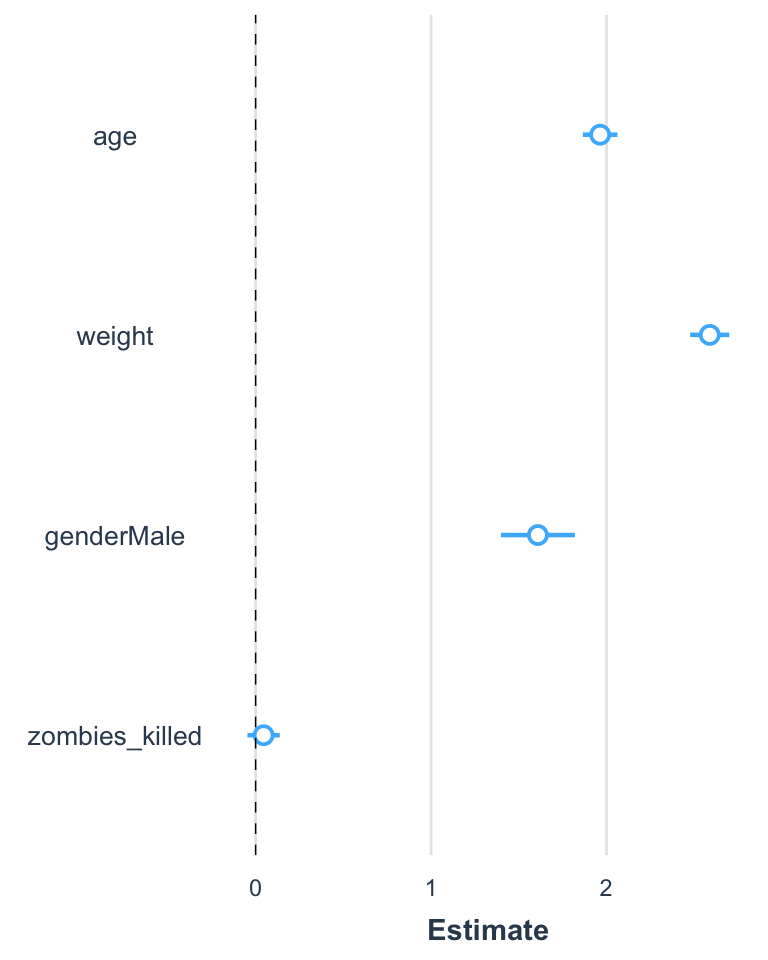
# plot with 95% CIs and distributions
plot_summs(m1, plot.distributions = TRUE)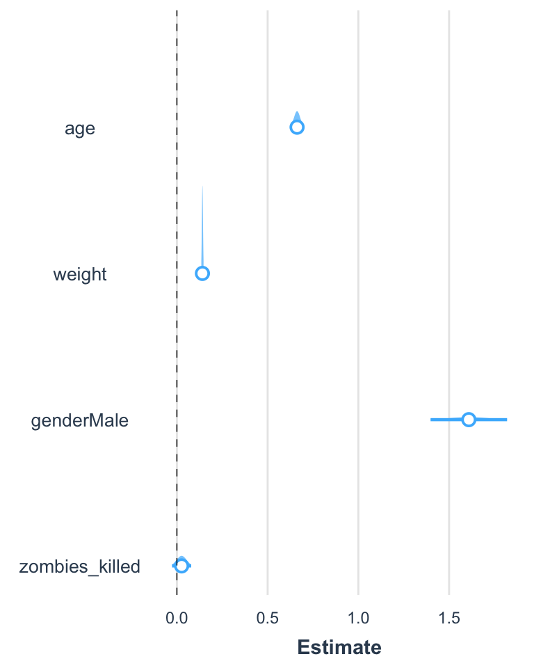
# plot with 95% CIs and distributions scaled to same height
plot_summs(m1, plot.distributions = TRUE, rescale.distributions = TRUE)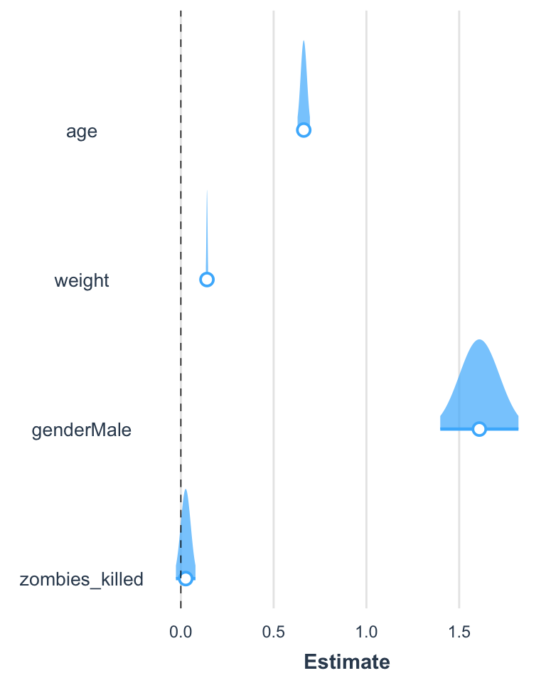
# plot multiple models
plot_summs(m1, m2, m3, m4, m5, scale = TRUE)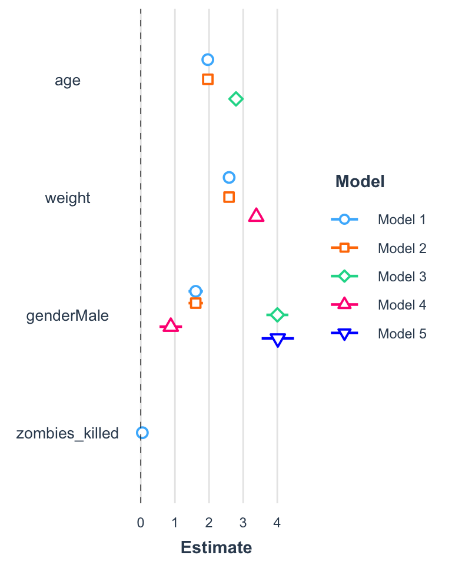
# plot multiple models
plot_summs(m1, m2, m3, m4, m5, plot.distributions = TRUE, rescale.distributions = TRUE)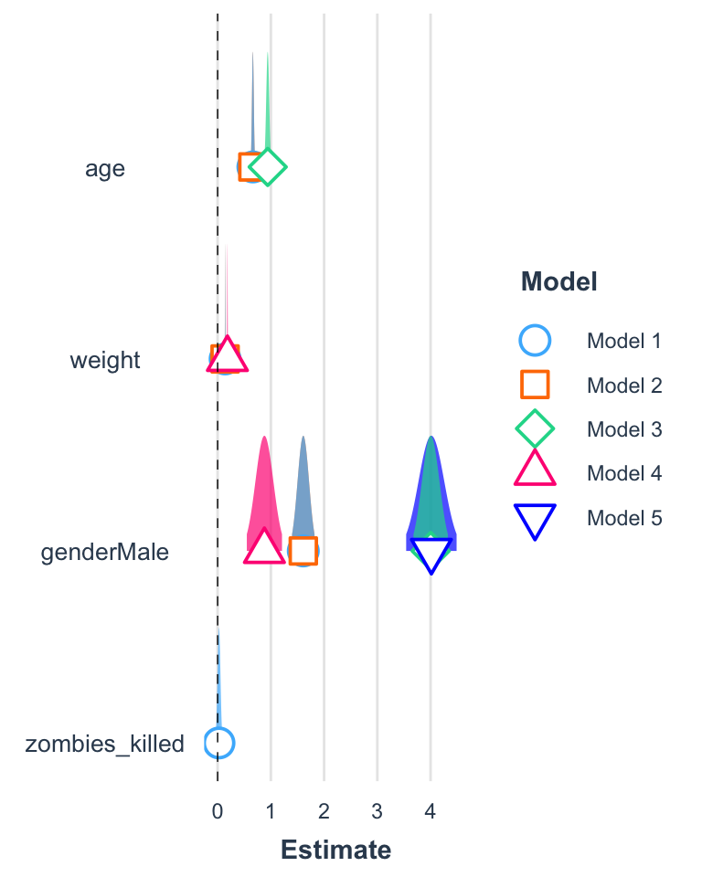
detach(package:jtools)